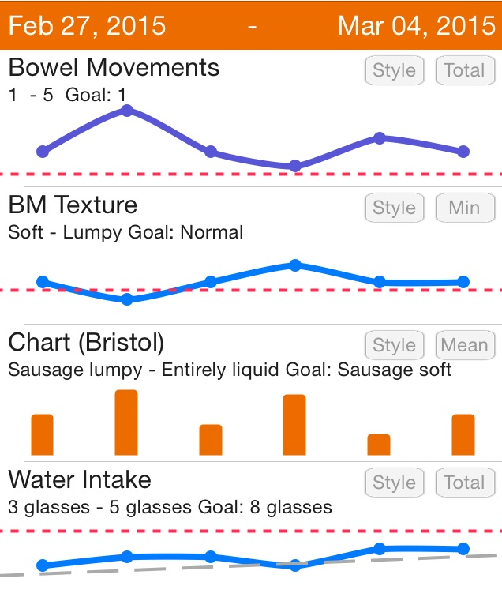

Healthy Tips of Bowel Movement
The Statistical and predicted curve of each item

Healthy Tips:
1. Don't suppress the desire to go
When you put off listening to the call of nature, the waste materials spend more time than is optimal in our colon. So if your colon is healthy, you will have regular bowel movements that are well shaped (like a torpedo), soft and easy to pass; subsequently, this means toxins and waste are being effectively eliminated from your system. In terms of BM texture and shape, we find you have pressrue on pooping ocassionally. So, we suggest you don't suppress the desire to go.
2.Ensure adequate intake of water/ water rich foods
Water is absorbed into the body throughout the entire length of the colon as it is a crucial requirement of the body, but is also needed to help move waste materials through. This means that insufficient water intake can cause stools to form way before the waste materials reach the end of the colon, which can cause constipation. In terms of water intaking, we find you may not achieve our supposed goal. Thus, please ensure adequate intake of water or water rich foods.
3. Exercise Regularly
Any form of exercise you enjoy is important, whether its swimming, walking, cycling, running, dancing, gardening, playing with children, cleaning, yoga, tai chi or walking is excellent. Rebounding is great for toning the colon and other organs and for stimulation of the lymphatic system. This is so easy to do and you can even bounce along while watching TV which I love to do!
Recommandation Food Beneficial on Healthy BM :
| Rank | Recommandation Food | Hot |
|---|---|---|
| 1 | Leafy Greens: Spinach, Swiss Chard and Kale | 100% |
| 2 | Avocados | 97% |
| 3 | Cultured or Fermented Vegetables | 97% |
| 4 | Yogurt | 96% |
| 5 | Prunes | 94% |
| 6 | Radishes | 92% |
| 7 | Flax Seeds/Flax Seed Oil | 91% |
| 8 | Beans | 90% |
| 9 | Dark Chocolate | 89% |
| 10 | Olives/Olive Oil | 84% |
We sincerely hope that our suggestion does help you have a healthy bowel movement. If you have any questions, please contact us as free as possible. And you can find us at "About Us" on home page.